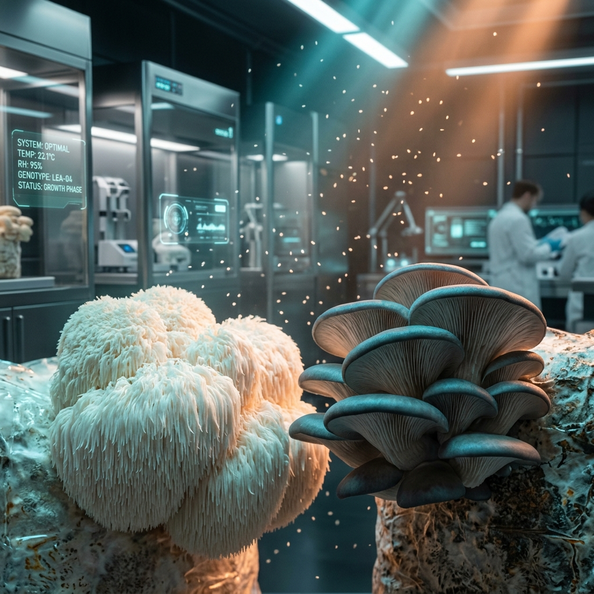
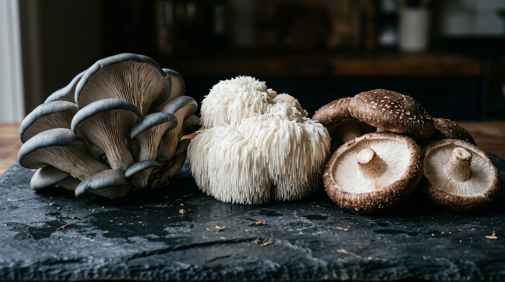
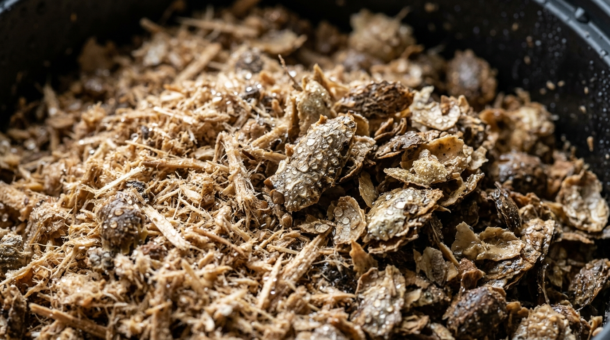
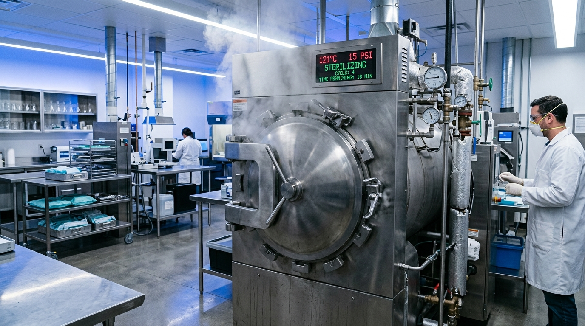
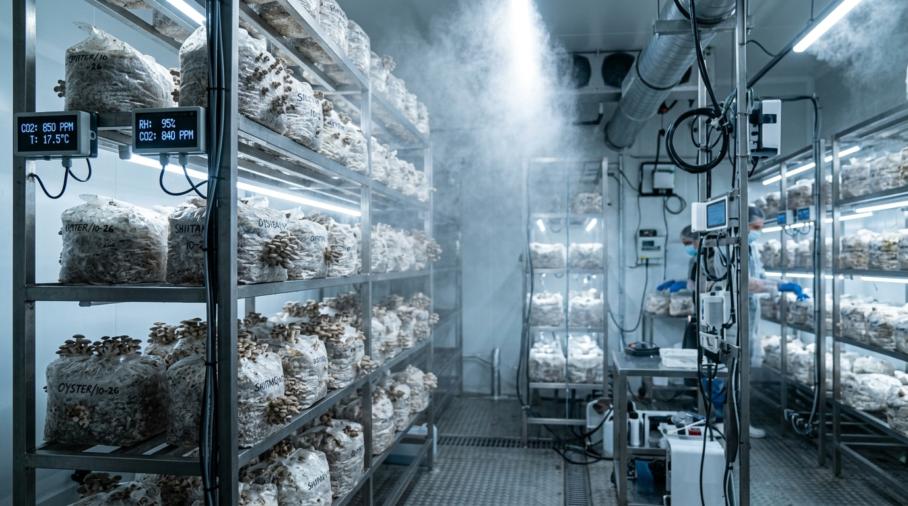
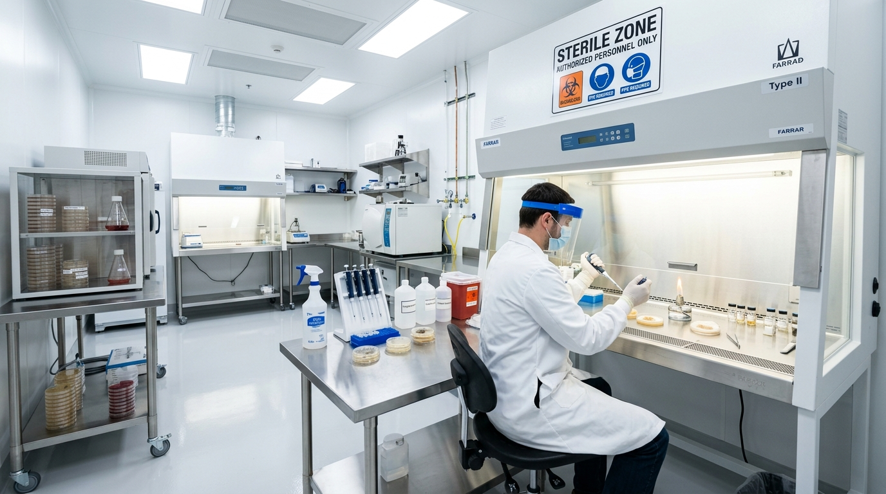

Domain Report:
Mycology &
Cultivation Parameters
Research and define the end-to-end biological requirements for mushroom cultivation, including optimal strains, substrate formulations, sterilization standards, and the exact environmental parameter ranges (temperature, humidity, CO2, light) needed for each phase of the fungal lifecycle.
# Comprehensive Biological Requirements for Commercial Mushroom Cultivation
This report
synthesizes research regarding the biological requirements, substrate formulations,
environmental parameters, and hygiene standards necessary for the successful commercial
cultivation of gourmet and medicinal mushrooms.

1. Commercial Strain Profiles and Economic Viability
Commercial mushroom production primarily revolves around three species, each with unique biological efficiencies (BE) and cultivation timelines.
- Oyster Mushrooms (Pleurotus ostreatus): The most efficient species for commercial entry. They exhibit a rapid colonization period (15–25 days) and an exceptional biological efficiency ranging from 80% to over 150% when grown on agricultural waste.
- Lion’s Mane (Hericium erinaceus): A high-value medicinal and gourmet variety. While it has a lower BE (50–80%) and requires high humidity (85–95%), its premium market price compensates for the lower yields. The total cycle lasts approximately 5–7 weeks.
- Shiitake (Lentinula edodes): Known for its consistent yields across multiple flushes, it has the longest production timeline. Shiitake requires a specialized "browning" or maturation phase, leading to a colonization period of 3–5 months.
2. Substrate Engineering and Preparation
The choice of substrate is determined by the fungal species' natural habitat, categorized primarily into wood-loving and straw-loving varieties.
Wood-Based Formulations
For wood-decomposing species (Lion's Mane, Shiitake, and Oyster), the "Master’s Mix"—consisting of 50% hardwood sawdust and 50% soybean hulls—is the industry standard for maximizing yield. Alternatively, a "Supplemented Sawdust" mix (80% sawdust, 20% bran) is used. These substrates must be hydrated to a moisture content of 60–65%.
Straw-Based Formulations
Oyster mushrooms excel on cereal straw chopped to 2–4 inches. Straw requires a higher hydration level, typically around 70%, to account for its faster evaporation rate compared to dense wood blocks.


3. Sterilization and Pasteurization Standards
Thermal and chemical treatments are critical to eliminate competitors like Trichoderma (green mold) and Bacillus (bacterial blotch).
- Sterilization: Mandatory for high-nutrient substrates (containing soy hulls or bran). Substrates must be processed at 15 PSI (121°C) for 2.5 to 4 hours. This duration is essential to kill heat-resistant Bacillus endospores.
- Pasteurization: Appropriate for low-nutrient substrates like straw. Methods
include:
- Hot Water Immersion: 160–175°F (71–79°C) for 1–2 hours. Temperatures must not exceed 175°F to prevent sugar caramelization and the destruction of beneficial thermophilic bacteria.
- Chemical Lime Bath: Maintaining a high pH (12–13) for 12–24 hours using hydrated lime.
- Cold Fermentation: A 7–10 day anaerobic process.

4. Environmental Lifecycle Parameters
Fungal development is managed through four distinct phases, each requiring precise atmospheric control.
*Note: Temperature reflects internal substrate heat during colonization.
The transition from colonization to fruiting is triggered by "environmental shocks": a sharp drop in temperature, a drastic reduction in CO2, and the introduction of light (500–1,000 Lux), which serves as a morphological cue for fruitbody development.
5. Contamination Management and Bio-security
The maintenance of culture purity is the highest priority in a commercial lab. Contamination management relies on a multi-tiered approach:
- Aseptic Technique: All inoculations must occur in a sterile environment, such as a Laminar Flow Hood or Still Air Box. Surfaces should be disinfected with 70% Isopropyl Alcohol, as this concentration penetrates microbial cell walls more effectively than 99% solutions.
- Facility Zoning: Strict physical separation (zoning) must exist between "dirty" areas (substrate mixing and pasteurization) and "clean" areas (inoculation labs and incubation rooms). HEPA filtration is recommended for clean zones.
- Vector Control: Fungus gnats must be excluded, as they act as primary vectors for disease.
- Post-Harvest Hygiene: A "steam-off" procedure (heating the room to 65–70°C) between crops is essential to break the infection cycle of persistent pathogens.

Senior Synthesiser Note: All worker agents reported with high confidence. The data regarding CO2 requirements for colonization versus fruiting was consistent across sources, highlighting the importance of high-CO2 environments for vegetative growth and low-CO2 environments for reproductive growth.